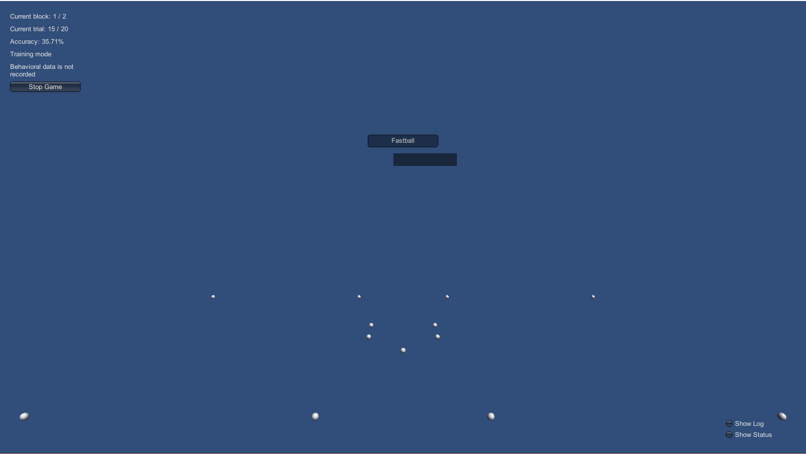
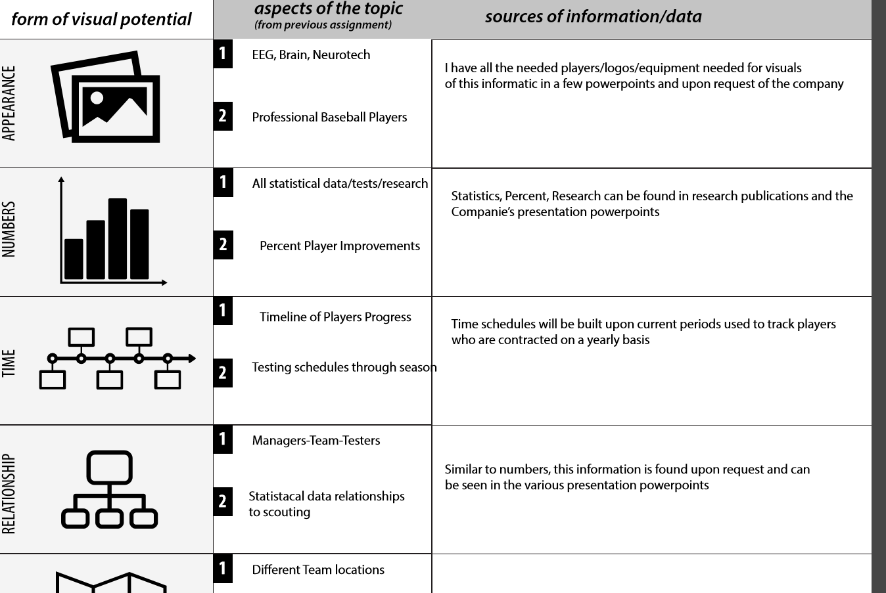
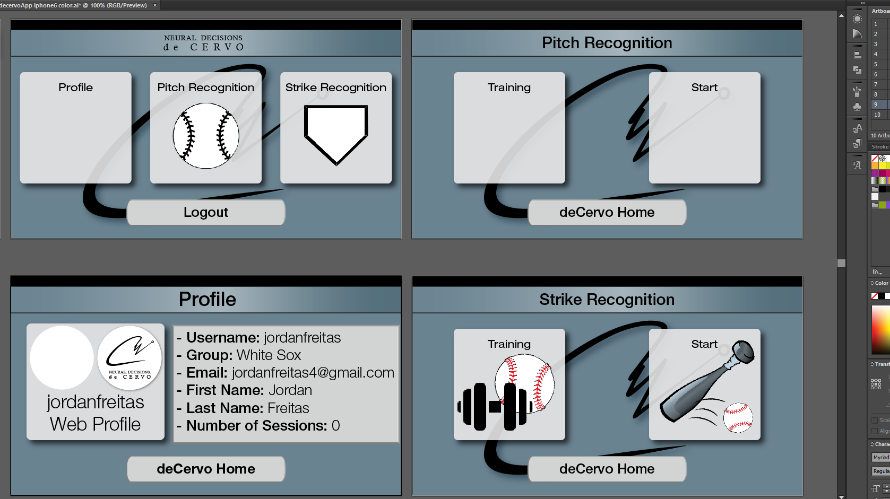

Role: UI/UX Designer
deCervo is a New York, Colombia University based company focused on enhancing player cognitive performance. My work and involvement with the company began in the Spring 2016. From my extensive background in baseball, knowledge of code/engineering, and user experience I have been able to redesign and assist in iteration of their mobile application and have most recently designed, directed, and implemented deCervo's entire website overhaul.
Due to the current size of the company, my days were spent quickly learning, constantly adapting, and tailoring my skills for the ultimate goal of the company. Endless hours of self-teaching, debugging, and testing was core as I often was the sole designer/developer leading to many iterations of trial-and-error that comes with starting a company.
In addition to the hard skills(C#, Javascript, HTML, CSS, Prototyping, Wireframing, Developing, Device Testing etc.) and programs used(Unity, Adobe Products, Tableau, Axure etc.), my experience has offered countless soft skills including interviewing, hiring, directing, and managing developers, working in sprint development cycles, and overall communication and interaction in a business/high-level/fast-moving environment.
Due to Non-Disclosure Agreements, code experience will not be shown but this will outline my work from a UX focused Perspective.
Website Overhaul
Directed and Designed a complete remake of deCervo's website.
Here you can explore the site!
Laying the foundations: Theme, Ideas, and Necessities
- Talked through problems we needed to solve with a website redesign
- Formulated Current and Future Use Cases of the Website
- Discussed business diagrams of how different company systems are connected

Search, Analyze, and Compare possible design layouts
- Took the goals of the company and the target audience and began brainstorming how our information will best be presented to the users.
- Diagrams and slides were drawn and iterated upon to define different sections of our website.
- User flows, diagrams, and swimlanes were created for customer interactions from start to finish, with decision points and possible next steps.

Map User Experience Flow
- Gathered User Flows, information about deCervo's primary client, and our product information and began theorizing possible design layouts.
- Steps were taken to allign the goals of deCervo to a clean and effective showcasing of elements, particularly rooted in the realm of sports training marketing.

Wireframe from User Experience Flows
- Rough paper prototypes of each section were done to find a general understanding of information placement and functionality.
- After iterating with users, I pushed these outlines to Illustrator, adding specific information and images.
- The final step was creating screens in Aure and developing hotspots and increased interactivity before coding the HTML, CSS, and Javascript.

Create HTML Templates
- Provided the developers a base template to work off of when implementing the site.
- Put together the various frameworks, themes, and base layouts.

Interview, hire, and direct web developers
- - The first part of this was finding a web developer that both had the skills to implement my designs from the wireframes
and the design sense to take what I envisioned to code.
- Consistent scheduling, check-ins, and code checking were vital for me to get the website to how I envisioned.

Integrate payment, Subscription methods, and Blog sections
- Implemented third party resources into our website to increase functionality.
- This included payment methods which were done in Stripe.
- Various ways to send email blasts utilizing Mailchimp.
- Sections for blogs and similar discussion forums through Wordpress integration.

Ensure full Responsiveness of the site
- Implemented third party resources into our website to increase functionality.
- This included payment methods which were done in Stripe.
- Various ways to send email blasts utilizing Mailchimp.
- Sections for blogs and similar discussion forums through Wordpress integration.

Mobile App
Transforming deCervo's research application to a marketable, consumer product.
When I first started, this bare bone application was under a research development build. This was the Unity application used as a simulation for EEG data to be recorded to each player’s specific profile. In this video you can see snips of the old application in use.
Here you can view and download the app on my developed site!
OLD
NEW

Reconstruct, Brainstorm, Ideate
- Laid out every problematic aspect of our research application.
- Research all possibilities and features the new application will need to accommodate and include.
- Determine user and device use cases with testing through Unity.

Wireframe and User Flow
- Wireframing was done in Illustrator.
- Designed first for iOS mobile and converted the base designs for other devices.
- Worked through profile integration and account associability inside the application.

Test, Debug, and add Features
- Worked in Unity to create various menus, scenes, and interfaces – code was done in C# and Javascript.
- Built APKs for all types of devices and iterated through user testing on each device.

3D Unity Development
- Hired 3D Unity Developers to create the field environments and game rendering functionality.
- They worked on improving animation and overall gameplay.
Focus on Device Compatibility
- Once again revisited device compatibility and functionality before releasing to App stores.
- Reconstructed buttons and menus based off user feedback.

Iterate with Users
- Finally revisited use cases and collected feedback based off each viewpoint:
- Baseball Players (Players)
- Cognitive Performance (Coaches/Managers)
- Analyzing Player Data (Scouts)